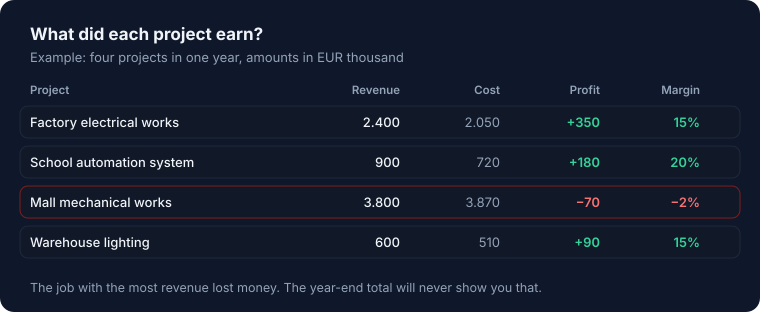

Project Profitability
How do you measure project profitability? Seeing it while the job is running, not when it ends
In project-based companies, profit is often learned once a year. The accountant produces the balance sheet and it becomes clear how much the company made that year. Which project made money and which lost it does not appear in that statement. In this article we explain why project profitability goes unmeasured and what has to be recorded in order to measure it.

What does total profit hide?
If the company has made a profit at year end, everyone relaxes. Yet within that total, jobs that earned well and jobs that lost money may have cancelled each other out. In the example below the company closes the year in profit, but its biggest project made a loss.

A company that does not see this table will quote the same price for a large job of the same kind the following year. Growing without knowing which type of job, which customer and which team makes money means growing the loss-making work as well.
Why are costs not charged to the project?
In most companies expenses are recorded; what is missing is which project the expense belongs to. A fuel receipt goes into the accounts as "vehicle expenses". The invoice from the hotel near the site becomes "lodging". Cable bought from the wholesaler is booked to the "materials" account. They are all in the right account, but which job the money was spent on has been lost.
With labour it is harder. A crew works on two different sites during the week, and their wages are paid as a single item at month end. The answer to who worked how many days on which project is in the attendance book, if there is one.
Then there is extra work that never gets invoiced. On site the customer says "let's run a line over here too" and the crew does it. The work is not in the contract, nobody tells the office, its materials and labour go into the project's cost, but it is never invoiced.
What has to be recorded in order to measure?
Seeing project profitability does not take a complicated calculation. Keeping four things consistently is enough.
A budget at the start of the project
You already do a cost calculation when you prepare the quote. Keep that calculation item by item: materials, labour, subcontractors, transport and lodging. Then you know what to compare against when the job is finished.
A project code on every expense
Purchase order, expense receipt, subcontractor invoice — whichever it is, the project it belongs to is selected when it is entered. Making this one field mandatory solves half the problem.
Who, on which project, for how many hours
A simple daily or weekly record of work. In the evening the crew leader marks on their phone who was on which site that day. Minute-level precision is not needed; half-day accuracy is enough for most companies.
A separate record of extra work
Every request outside the contract is reported to the office in a short record and approved by the customer before it is carried out. That way it gets invoiced and does not distort the project's original budget.

Seeing it while the job is running
Calculating profitability after the job is finished is useful for the next quote. The real benefit is in seeing it while the job is still going. If eighty per cent of the labour budget has been spent but half the work remains, there is a big difference between knowing that in week three and finding out after delivery.
When you see it early you have options. You can change the crew, discuss the price of the extra work with the customer or switch to alternative materials. Once the job is finished, the only thing left is to accept the loss.
For this, a single screen checked once a week is enough: for each project, the budget, the amount spent to date and the percentage of work completed.
Can't we do this in Excel?
For a single project you can, and some companies do. The difficulty is collecting the data. Purchasing is in one place, expense receipts in another, attendance in a book, invoices in the accounting program. Someone has to copy all of it into one spreadsheet by hand every week. That effort is usually abandoned in the second month.
What software contributes here is not the arithmetic but capturing the data at its source. The project is selected when the purchase order is entered, when the expense receipt is photographed on the phone, when working hours are entered. No extra effort goes into the report; the records gather under the project by themselves.
There are various tools that do this: ERP systems with a project module, dedicated project accounting programs, and solutions developed for a particular company. The choice depends on where purchasing and accounting are kept today. We prefer to add on top of the existing setup without disrupting it.
Frequently asked questions
How do we allocate overheads to projects?
Do not allocate them at the start. First charge direct costs (materials, labour, subcontractors, transport) to the project. Costs such as rent and office staff can be added later with a simple ratio. Just seeing the direct costs changes the picture in most companies.
Doesn't our accountant already do this?
Your accountant keeps the statutory books and does what is right for tax purposes. Profitability by project is not a legal requirement, so it is not part of that job. It is a record the company keeps for its own management.
What if the team resists entering hours?
Do not ask everyone to enter them individually. It is enough for the crew leader to mark once a day who was on which job, and that is accepted far more easily.
Let’s bring your business under control.
We map the path of one of your orders together and see where time and money are lost.
Contact details